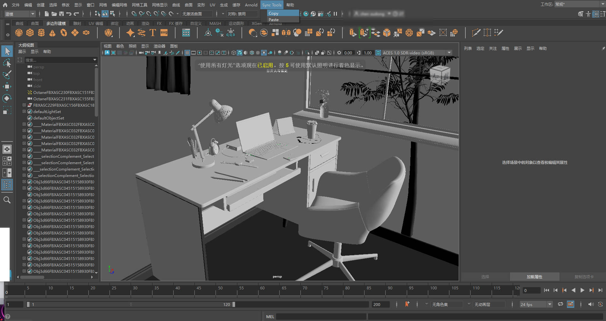
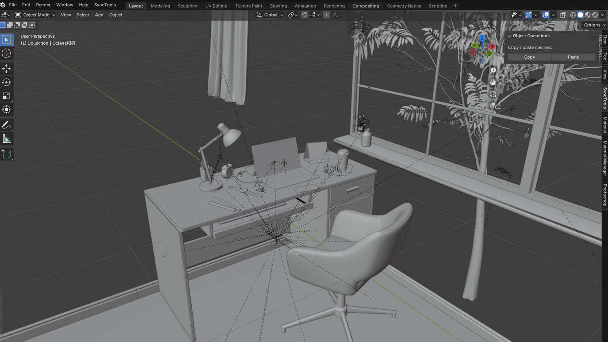

SyncTools for Maya
概述
SyncTools Pro 是一款跨软件工具，旨在简化在 Blender 和 Maya 等不同应用程序之间复制和粘贴详细场景数据的流程。只需单击一下，即可导出对象——包括网格、灯光、摄像机、材质、动画等——从一个场景导入到另一个场景，显著节省您的制作工作流程中的时间和精力。多 DCC 平台支持
SyncTools 系列现已扩展对主流数字内容创作软件的支持，包括：
所有插件均采用统一的数据交换协议，实现跨平台无损资产转换和真正的多软件协同工作流程。


Blender Side
1. 插件 Installation
第一步： Open Blender and navigate to 编辑 > 偏好设置 > 添加-ons.第二步： 点击 安装 button and select the SyncTools Pro ZIP file.第三步： 安装后，通过勾选 SyncTools Pro 旁边的复选框启用插件。插件界面将出现在 3D 视图侧边栏的 SyncTools 标签页下。2. 插件 Settings
在偏好设置菜单中，您可以配置 多种选项，界面直观：快捷键模式：根据个人工作习惯，在标准键盘快捷键与 鼠标拖动方式之间进行选择 ，根据个人工作习惯。导入/导出 Options:选择传输数据时要包含哪些元素。选项包括灯光、摄像机、材质、网格、骨架和烘焙动画.Global 缩放 Settings:调整导入和导出过程中应用于场景的整体缩放比例 。渲染器 Sync 功能:启用同步渲染器选项（例如 Octane 材质同步）以确保材质设置在不同环境中保持一致.注意: 所有设置更改都会在后台自动生效；调整后无需执行任何额外步骤.3. 工作流程
复制 Operation
1. 选择： 在 3D 视图中，选择您要复制的对象。复制: 点击 复制 SyncTools 面板中的按钮或使用指定的快捷键。3. 导出： 插件将您的选择导出为 FBX 文件到指定的缓存文件夹（位于您的 Documents 文件夹），并生成配套的层级文件.粘贴操作
切换场景： 移动到目标场景或项目。粘贴: 点击 粘贴 按钮或使用相应的快捷键。导入： 插件自动从缓存导入最新的 FBX 文件，并根据您的导入设置过滤数据。缓存文件随后被清除以保持最新状态。快捷键使用
除了面板按钮外，您可以使用可自定义的快捷键（例如 Ctrl+Shift+C 复制，Ctrl+Shift+V 粘贴）来简化您的工作流程。如有需要，可 在插件’设置中调整这些快捷键.---Maya 端
1. 插件安装与初始化
安装：在 Maya 中加载插件脚本，将其添加到您的插件目录或通过 Maya 的脚本编辑器执行。初始化：加载后，插件自动创建一个 Sync Tools 菜单在 Maya 的主窗口中。2. 使用插件
复制操作
1. 选择： 选择要在 Maya 中复制的对象。复制命令： 从 Sync Tools 菜单中，选择 复制.导出： 插件将选定对象导出为 FBX 文件，连同层级文件一起保存到 Documents 目录的缓存文件夹中。粘贴操作
1. 目标场景：打开或切换到要导入数据的场景。粘贴 Command: 从 Sync Tools 菜单中，选择 粘贴.3. 导入： 插件自动从缓存导入最新的 FBX 文件并将其集成到场景中。成功导入后，缓存文件将被删除以防止重复数据。---版本兼容性
Blender 支持：
-
官方支持： 4.2 LTS 及更高版本
-
实验性支持： 4.0-4.1（高级功能有所限制）
Maya 支持：
-
官方支持： 2023.3 / 2024.x
-
旧版支持： 2020-2022（需要手动加载插件）
数据兼容性
完全支持:
✔ 基础几何体（网格/NURBS）
✔ 变换层级
✔ 核心材质属性（PBR 工作流）
✔ 点光源/聚光灯/方向光
✔ 基础动画关键帧
✔ 摄像机参数（FOV/焦距）
部分支持:
⚠ 复杂着色器节点（自动转换为近似值）
⚠ 蒙皮权重（需匹配顶点顺序）
⚠ 驱动动画（需要等效表达式）
⚠ UV 贴图（最多支持 4 个通道）
不支持:
✖ 粒子系统
✖ 流体模拟数据
✖ 程序化纹理（需预先烘焙）
✖ 自定义着色器网络
✖ 动态约束（刚体/布料）
重要注意事项
1️⃣ 单位系统: 建议使用公制（米）
2️⃣ 轴向转换: 自动处理 Y-上 ↔ Z-上 转换
3️⃣ 材质映射: Blender Principled BSDF ↔ Maya Standard Surface
4️⃣ 命名规范: 特殊字符（@#%）可能导致导入问题
5️⃣ 插件依赖: 需要匹配的 SyncTools 版本
(数据通过 FBX 中间件转换 – 请查看发行说明以获取最新兼容性更新.)
结语
SyncTools Pro 旨在提供在 Blender 和 Maya 之间无缝高效传输场景数据的方法。通过简单的复制粘贴操作，您可以轻松交换详细的场景信息，简化创作流程。使用 SyncToolsPro 享受更高效的工作流程！---如有需要，请随时联系我们获取 进一步帮助.支持 Blender 基金会
我们相信应当回馈让我们的工作成为可能的社区。 每个月，我们将插件收入的一部分用于支持 Blender 基金会。 感谢您帮助我们为开源创意的未来做出贡献。